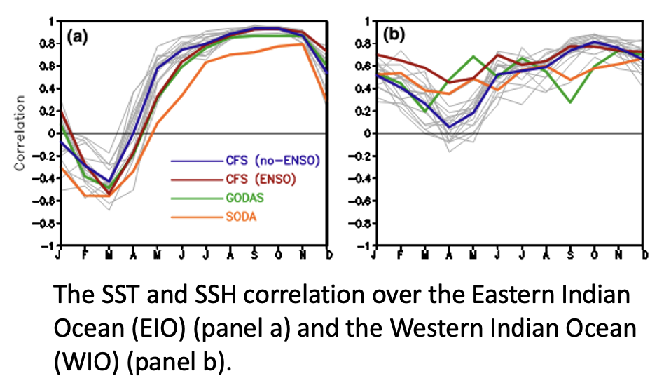
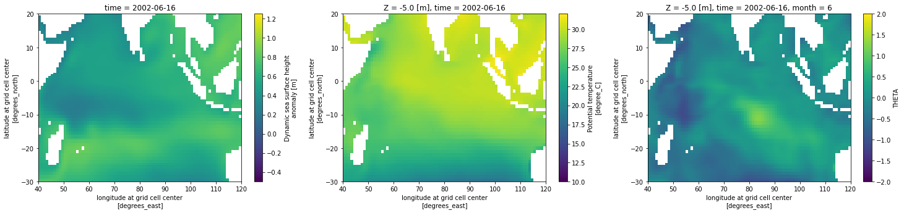
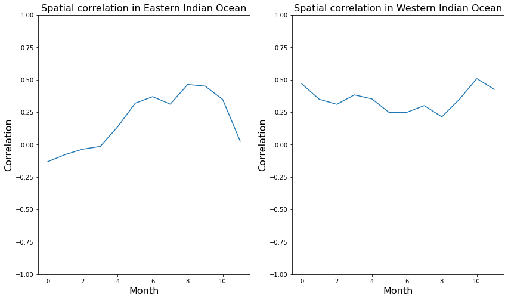

# Import various librariesThe spatial Correlation between sea surface temperature anomaly and sea surface height anomaly in the Indian Ocean – A demo using ECCO
From the PO.DAAC Cookbook, to access the GitHub version of the notebook, follow this link.
Date: 2022-02-15
Objective
This tutorial will use data from the Estimating the Climate and Circulation of the Ocean (ECCO) model to derive spatial correlations through time for two regions of the Indian Ocean. The goal is to investigate the correlative characteristics of the Indian Ocean Dipole and how the east and west regions behave differently. This investigation was motivated by Fig 2 a,b in the paper by Wang et al. (2016).

- Wang, H., Murtugudde, R. & Kumar, A. Evolution of Indian Ocean dipole and its forcing mechanisms in the absence of ENSO. Clim Dyn 47, 2481–2500 (2016). https://doi.org/10.1007/s00382-016-2977-y
Input datasets
- ECCO Ocean Temperature and Salinity - Monthly Mean 0.5 Degree (Version 4 Release 4). DOI: https://doi.org/10.5067/ECG5M-OTS44
- ECCO Sea Surface Height - Daily Mean 0.5 Degree (Version 4 Release 4b). DOI: https://doi.org/10.5067/ECG5D-SSH4B
Services and software used
- NASA Harmony netcdf-to-Zarr
- xarray, requests, json, pandas, numpy, matplotlib, s3fs
- Various python utlities including the NASA harmony-py package
from matplotlib import pylab as plt
import xarray as xr
import numpy as np
import pandas as pd
import requests
import json
import time
import s3fs
import re
from datetime import datetime
from harmony import Client, Collection, Environment, RequestIdentify the ShortName of the dataset of interest.
The shortname is an unique pointer for each NASA dataset.
ShortName = "ECCO_L4_SSH_05DEG_MONTHLY_V4R4B"Set start and end dates
start_date = "1992-01-01"
end_date = "2002-12-31"
# break it down into Year, Month, Day (and minutes and seconds if desired)
# as inputs to harmony.py call using datetime()
start_year = 2002
start_month = 1
start_day = 1
end_year = 2017
end_month = 12
end_day = 31Spatial bounds (Region of Interest) – Not used
westernmost_longitude = 100.
easternmost_longitude = 150.
northermost_latitude = 30.
southernmost_latitude = 0.Find the concept_id
response = requests.get(
url='https://cmr.earthdata.nasa.gov/search/collections.umm_json',
params={'provider': "POCLOUD",
'ShortName': ShortName,
'page_size': 1}
)
ummc = response.json()['items'][0]
ccid = ummc['meta']['concept-id']
ccid'C2129189405-POCLOUD'NetCDF to Zarr transformation
Setup the harmony-py service call and execute a request
# using the the harmony.py service, set up the request and exectue it
ecco_collection = Collection(id=ccid)
time_range = {'start': datetime(start_year, start_month, start_day), 'stop': datetime(end_year, end_month, end_day)}
print(time_range)
harmony_client = Client(env=Environment.PROD)
# in this example set concatentae to 'False' because the monthly input time steps vary slightly
# (not always centered in the middle of month)
ecco_request = Request(collection=ecco_collection, temporal=time_range, format='application/x-zarr', concatenate='False')
# sumbit request and monitor job
ecco_job_id = harmony_client.submit(ecco_request)
print('\n Waiting for the job to finish. . .\n')
ecco_response = harmony_client.result_json(ecco_job_id, show_progress=True)
print("\n. . .DONE!"){'start': datetime.datetime(2002, 1, 1, 0, 0), 'stop': datetime.datetime(2017, 12, 31, 0, 0)}
Waiting for the job to finish. . .
. . .DONE! [ Processing: 100% ] |###################################################| [|]You can also wrap the creation of the Harmony request URL into one function. Shown here for legacy purposes (does not execute a Harmony request):
def get_harmony_url(ccid,start_date,end_date):
"""
Parameters:
===========
ccid: string
concept_id of the datset
date_range: list
[start_data, end_date]
Return:
=======
url: the harmony URL used to perform the netcdf to zarr transformation
"""
base = f"https://harmony.earthdata.nasa.gov/{ccid}"
hreq = f"{base}/ogc-api-coverages/1.0.0/collections/all/coverage/rangeset"
rurl = f"{hreq}?format=application/x-zarr"
#print(rurl)
subs = '&'.join([f'subset=time("{start_date}T00:00:00.000Z":"{end_date}T23:59:59.999Z")'])
#subs = subs + '&' + '&'.join([f'subset=lat({southernmost_latitude}:{northermost_latitude})'])
#subs = subs + '&' + '&'.join([f'subset=lon({westernmost_longitude}:{easternmost_longitude})'])
rurl = f"{rurl}&{subs}"
return rurl
ccid='C2129189405-POCLOUD'
print(get_harmony_url(ccid,start_date,end_date))
# this is the way you would execute it
# response = requests.get(url=rurl).json()https://harmony.earthdata.nasa.gov/C2129189405-POCLOUD/ogc-api-coverages/1.0.0/collections/all/coverage/rangeset?format=application/x-zarr&subset=time("1992-01-01T00:00:00.000Z":"2002-12-31T23:59:59.999Z")Access the staged cloud datasets over native AWS interfaces
print(ecco_response['message'])
with requests.get(ecco_response['links'][2]['href']) as r:
creds = r.json()
print( creds.keys() )
print("AWS credentials expire on: ", creds['Expiration'] )The job has completed successfully. Contains results in AWS S3. Access from AWS us-west-2 with keys from https://harmony.earthdata.nasa.gov/cloud-access.sh
dict_keys(['AccessKeyId', 'SecretAccessKey', 'SessionToken', 'Expiration'])
AWS credentials expire on: 2022-05-03T08:45:27.000ZList zarr datasets with s3fs
s3_dir = ecco_response['links'][3]['href']
print("root directory:", s3_dir)
s3_urls = [u['href'] for u in ecco_response['links'][4:-1]]
# sort the URLs in time order
s3_urls.sort()
print(s3_urls[0])
s3 = s3fs.S3FileSystem(
key=creds['AccessKeyId'],
secret=creds['SecretAccessKey'],
token=creds['SessionToken'],
client_kwargs={'region_name':'us-west-2'},
)
len(s3.ls(s3_dir))root directory: s3://harmony-prod-staging/public/harmony/netcdf-to-zarr/0164d106-f8f0-431e-926c-c7d3f5f0575e/
s3://harmony-prod-staging/public/harmony/netcdf-to-zarr/0164d106-f8f0-431e-926c-c7d3f5f0575e/SEA_SURFACE_HEIGHT_mon_mean_2001-12_ECCO_V4r4b_latlon_0p50deg.zarr193Open datasets with xarray()
ds0 = xr.open_zarr(s3.get_mapper(s3_urls[0]), decode_cf=True, mask_and_scale=True)
ds0<xarray.Dataset>
Dimensions: (time: 1, latitude: 360, longitude: 720, nv: 2)
Coordinates:
* latitude (latitude) float32 -89.75 -89.25 -88.75 ... 89.25 89.75
latitude_bnds (latitude, nv) float32 dask.array<chunksize=(360, 2), meta=np.ndarray>
* longitude (longitude) float32 -179.8 -179.2 -178.8 ... 179.2 179.8
longitude_bnds (longitude, nv) float32 dask.array<chunksize=(720, 2), meta=np.ndarray>
* time (time) datetime64[ns] 2001-12-16T12:00:00
time_bnds (time, nv) datetime64[ns] dask.array<chunksize=(1, 2), meta=np.ndarray>
Dimensions without coordinates: nv
Data variables:
SSH (time, latitude, longitude) float32 dask.array<chunksize=(1, 360, 720), meta=np.ndarray>
SSHIBC (time, latitude, longitude) float32 dask.array<chunksize=(1, 360, 720), meta=np.ndarray>
SSHNOIBC (time, latitude, longitude) float32 dask.array<chunksize=(1, 360, 720), meta=np.ndarray>
Attributes: (12/57)
Conventions: CF-1.8, ACDD-1.3
acknowledgement: This research was carried out by the Jet Pr...
author: Ou Wang and Ian Fenty
cdm_data_type: Grid
comment: Fields provided on a regular lat-lon grid. ...
coordinates_comment: Note: the global 'coordinates' attribute de...
... ...
time_coverage_duration: P1M
time_coverage_end: 2002-01-01T00:00:00
time_coverage_resolution: P1M
time_coverage_start: 2001-12-01T00:00:00
title: ECCO Sea Surface Height - Monthly Mean 0.5 ...
uuid: cd67c8ad-0f9e-4cf7-a3c3-4ac4d6016ea5![]()
![]()
![]()
![]()
Concatenate all granules (datasets) via a loop
ssh_ds = xr.concat([xr.open_zarr(s3.get_mapper(u)) for u in s3_urls], dim="time", coords='minimal')
ssh_ds
#ssh_ds_group = xr.concat([xr.open_zarr(s3.get_mapper(u)) for u in s3_urls], dim="time", coords='minimal').groupby('time.month')<xarray.Dataset>
Dimensions: (time: 193, latitude: 360, longitude: 720, nv: 2)
Coordinates:
* latitude (latitude) float32 -89.75 -89.25 -88.75 ... 89.25 89.75
latitude_bnds (latitude, nv) float32 -90.0 -89.5 -89.5 ... 89.5 89.5 90.0
* longitude (longitude) float32 -179.8 -179.2 -178.8 ... 179.2 179.8
longitude_bnds (longitude, nv) float32 -180.0 -179.5 -179.5 ... 179.5 180.0
* time (time) datetime64[ns] 2001-12-16T12:00:00 ... 2017-12-16T...
time_bnds (time, nv) datetime64[ns] dask.array<chunksize=(1, 2), meta=np.ndarray>
Dimensions without coordinates: nv
Data variables:
SSH (time, latitude, longitude) float32 dask.array<chunksize=(1, 360, 720), meta=np.ndarray>
SSHIBC (time, latitude, longitude) float32 dask.array<chunksize=(1, 360, 720), meta=np.ndarray>
SSHNOIBC (time, latitude, longitude) float32 dask.array<chunksize=(1, 360, 720), meta=np.ndarray>
Attributes: (12/57)
Conventions: CF-1.8, ACDD-1.3
acknowledgement: This research was carried out by the Jet Pr...
author: Ou Wang and Ian Fenty
cdm_data_type: Grid
comment: Fields provided on a regular lat-lon grid. ...
coordinates_comment: Note: the global 'coordinates' attribute de...
... ...
time_coverage_duration: P1M
time_coverage_end: 2002-01-01T00:00:00
time_coverage_resolution: P1M
time_coverage_start: 2001-12-01T00:00:00
title: ECCO Sea Surface Height - Monthly Mean 0.5 ...
uuid: cd67c8ad-0f9e-4cf7-a3c3-4ac4d6016ea5![]()
![]()
Rinse and Repeat all steps for the second (ocean/salinity temperature) dataset
Run 2nd Harmony netCDF-to-Zarr call
ShortName = "ECCO_L4_TEMP_SALINITY_05DEG_MONTHLY_V4R4"
# 1) Find new concept_id for this dataset
response = requests.get(
url='https://cmr.earthdata.nasa.gov/search/collections.umm_json',
params={'provider': "POCLOUD",
'ShortName': ShortName,
'page_size': 1}
)
ummc = response.json()['items'][0]
ccid = ummc['meta']['concept-id']
# using the the harmony.py service, set up the request and exectue it
ecco_collection = Collection(id=ccid)
time_range = {'start': datetime(start_year, start_month, start_day), 'stop': datetime(end_year, end_month, end_day)}
harmony_client = Client(env=Environment.PROD)
# in this example set concatentae to 'False' because the monthly input time steps vary slightly
# (not always centered in the middle of month)
ecco_request = Request(collection=ecco_collection, temporal=time_range, format='application/x-zarr', concatenate='False')
# sumbit request and monitor job
ecco_job_id = harmony_client.submit(ecco_request)
print('\nWaiting for the job to finish. . .\n')
ecco_response = harmony_client.result_json(ecco_job_id, show_progress=True)
print("\n. . .DONE!")
Waiting for the job to finish. . .
. . .DONE! [ Processing: 100% ] |###################################################| [|]Read the S3 Zarr endpoints and aggregate to single Zarr
# 1) read the AWS credentials
print(ecco_response['message'])
with requests.get(ecco_response['links'][2]['href']) as r:
creds = r.json()
print( creds.keys() )
print("AWS credentials expire on: ", creds['Expiration'] )
# 2) print root directory and read the s3 URLs into a list
s3_dir2 = ecco_response['links'][3]['href']
print("root directory:", s3_dir2)
s3_urls2 = [u['href'] for u in ecco_response['links'][4:-1]]
# sort the URLs in time order
s3_urls2.sort()
# 3) Autenticate AWS S3 credentials
s3 = s3fs.S3FileSystem(
key=creds['AccessKeyId'],
secret=creds['SecretAccessKey'],
token=creds['SessionToken'],
client_kwargs={'region_name':'us-west-2'},
)
# 4) Read and concatenate into a single Zarr dataset
temp_ds = xr.concat([xr.open_zarr(s3.get_mapper(u)) for u in s3_urls2], dim="time", coords='minimal')
#temp_ds_group = xr.concat([xr.open_zarr(s3.get_mapper(u)) for u in s3_urls2], dim="time", coords='minimal').groupby('time.month')
temp_dsThe job has completed successfully. Contains results in AWS S3. Access from AWS us-west-2 with keys from https://harmony.earthdata.nasa.gov/cloud-access.sh
dict_keys(['AccessKeyId', 'SecretAccessKey', 'SessionToken', 'Expiration'])
AWS credentials expire on: 2022-05-03T08:48:44.000Z
root directory: s3://harmony-prod-staging/public/harmony/netcdf-to-zarr/9dd5c9b3-84c4-48e5-907d-2bd21d92a60c/<xarray.Dataset>
Dimensions: (time: 193, Z: 50, latitude: 360, longitude: 720, nv: 2)
Coordinates:
* Z (Z) float32 -5.0 -15.0 -25.0 ... -5.461e+03 -5.906e+03
Z_bnds (Z, nv) float32 nan -10.0 -10.0 ... -5.678e+03 -6.134e+03
* latitude (latitude) float32 -89.75 -89.25 -88.75 ... 89.25 89.75
latitude_bnds (latitude, nv) float32 -90.0 -89.5 -89.5 ... 89.5 89.5 90.0
* longitude (longitude) float32 -179.8 -179.2 -178.8 ... 179.2 179.8
longitude_bnds (longitude, nv) float32 -180.0 -179.5 -179.5 ... 179.5 180.0
* time (time) datetime64[ns] 2001-12-16T12:00:00 ... 2017-12-16T...
time_bnds (time, nv) datetime64[ns] dask.array<chunksize=(1, 2), meta=np.ndarray>
Dimensions without coordinates: nv
Data variables:
SALT (time, Z, latitude, longitude) float32 dask.array<chunksize=(1, 50, 280, 280), meta=np.ndarray>
THETA (time, Z, latitude, longitude) float32 dask.array<chunksize=(1, 50, 280, 280), meta=np.ndarray>
Attributes: (12/62)
Conventions: CF-1.8, ACDD-1.3
acknowledgement: This research was carried out by the Jet...
author: Ian Fenty and Ou Wang
cdm_data_type: Grid
comment: Fields provided on a regular lat-lon gri...
coordinates_comment: Note: the global 'coordinates' attribute...
... ...
time_coverage_duration: P1M
time_coverage_end: 2002-01-01T00:00:00
time_coverage_resolution: P1M
time_coverage_start: 2001-12-01T00:00:00
title: ECCO Ocean Temperature and Salinity - Mo...
uuid: 7f718714-4159-11eb-8bbd-0cc47a3f819b![]()
Do data masking, calculate a SST anomaly, and plot some figures
# Mask for the good data. Everything else defaults to NaN
# SST missing value 9.9692100e+36
# SSH missing value 9.9692100e+36
cond = (ssh_ds < 1000)
ssh_ds_masked = ssh_ds['SSH'].where(cond)
cond = (temp_ds < 1000)
temp_ds_masked = temp_ds['THETA'].where(cond)
# Derive a SST climatology and subtract it from the SST to create SST anomaly and remove trends
climatology_mean = temp_ds_masked.groupby('time.month').mean('time',keep_attrs=True,skipna=False)
temp_ds_masked_anomaly = temp_ds_masked.groupby('time.month') - climatology_mean # subtract out longterm monthly mean
fig,ax=plt.subplots(1,3,figsize=(25,5))
# take a slice of the Indian Ocean and plot SSH, SST, SST anomaly
ssh_ds_masked['SSH'][6].sel(longitude=slice(40,120),latitude=slice(-30,20)).plot(ax=ax[0], vmin=-0.5,vmax=1.25)
temp_ds_masked['THETA'][6].sel(longitude=slice(40,120),latitude=slice(-30,20), Z=slice(0,-5)).plot(ax=ax[1], vmin=10,vmax=32)
temp_ds_masked_anomaly['THETA'][6].sel(longitude=slice(40,120),latitude=slice(-30,20), Z=slice(0,-5)).plot(ax=ax[2], vmin=-2,vmax=2)<matplotlib.collections.QuadMesh at 0x7fe46b00b460>
Perform the correlations in the east and west Indian Ocean
# Western and Eastern Indian Ocean regions (WIO and EIO respectively)
# EIO; 90 –110 E, 10 S–0N
# WIO; 50 –70 E, 10 S–10 N
# Group Eastern Indian Ocean data by month. This will make the correlation of all monthly values straightforwrd.
ssh_group = ssh_ds_masked['SSH'].sel(longitude=slice(90,110),latitude=slice(-10,0)).groupby('time.month')
#temp_group = temp_ds_masked['THETA'].sel(longitude=slice(90,110),latitude=slice(-10,0), Z=-5.0).drop('Z').groupby('time.month')
temp_group = temp_ds_masked_anomaly['THETA'].sel(longitude=slice(90,110),latitude=slice(-10,0), Z=-5.0).drop('Z').groupby('time.month')
print(" Running correlations in eastern Indian Ocean . . .\n")
corr = []
for month in range(1,13):
corr.append(xr.corr(ssh_group[month], temp_group[month]))
#print("\nthe correlation in the east is: " , xr.corr(ssh_group[month], temp_group[month]).values)
# Do some plotting
fig,ax=plt.subplots(1,2,figsize=(14,8))
ax[0].set_title("Spatial correlation in Eastern Indian Ocean",fontsize=16)
ax[0].set_ylabel("Correlation",fontsize=16)
ax[0].set_xlabel("Month",fontsize=16)
ax[0].set_ylim([-1, 1])
ax[0].plot(corr)
# Repeat for Western Indian Ocean
# Group the data by month. This will make the correlation of all monthly values straightforwrd.
ssh_group = ssh_ds_masked['SSH'].sel(longitude=slice(50,70),latitude=slice(-10,10)).groupby('time.month')
#temp_group = temp_ds_masked['THETA'].sel(longitude=slice(50,70),latitude=slice(-10,10), Z=-5.0).drop('Z').groupby('time.month')
temp_group = temp_ds_masked_anomaly['THETA'].sel(longitude=slice(50,70),latitude=slice(-10,10), Z=-5.0).drop('Z').groupby('time.month')
print(" Running correlations in western Indian Ocean . . .\n")
corr2 =[]
for month in range(1,13):
corr2.append(xr.corr(ssh_group[month], temp_group[month]))
#print("\nthe correlation in the west is: " , xr.corr(ssh_group[month], temp_group[month]).values)
ax[1].set_title("Spatial correlation in Western Indian Ocean",fontsize=16)
ax[1].set_ylabel("Correlation",fontsize=16)
ax[1].set_xlabel("Month",fontsize=16)
ax[1].set_ylim([-1, 1])
ax[1].plot(corr2) Running correlations in eastern Indian Ocean . . .
Running correlations in western Indian Ocean . . .
